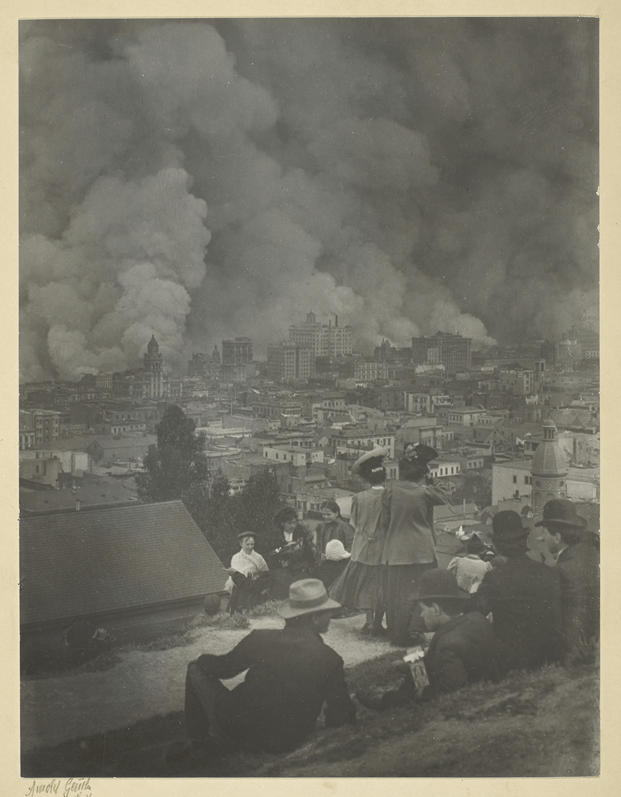

How to Read
On a phone:
Swipe, or tap the edges of the page
On a laptop:
Use the arrow keys, the space bar, or the touch pad
On a desktop:
Use any of the above, or the scroll wheel
The Tale of Prowness and Passion
Teógenes Moura
Note to Readers
This is a first draft of a series of experiments I’m working on with textual content which is based on real-world variables. In the past decades, a lot of technologies have come to the spotlight bringing forth concepts only priorly seen in science fiction stories such as deep learning, blockchain and virtual reality. Meanwhile, the world is facing challenges in a scale we couldn’t have predicted and it all seems much more intense due to the ever-connected culture the internet has brought to life.
The junction between the two realities has always seemed inevitable to me. We build things to make live easier. Which, by its turn, only means we desperately desire to have the time to take good care of the ones we love, to fulfill whichever potentialities we believe we have - regardless of how intimate they might seem - and to admire human existence in all of its aspects.
This short story is at the same time about the power of community and fear-facing, brave individuals. Blockchain inspires the prior and several of my closest friends the latter. A community built on trust which brings to life a global-scale cryptography-based currency is only as strong as the hearts and minds of its individuals, specially the ones who delve themselves into the realm of complicated abstractions and transform them into user facing experiences. The duality between the mind and the heart has always intrigued me and I introduce it to you by the means of Anne-Day Turin, who you’ll meet very soon.
I’m having a very nice time working on this project and thinking about Ann, her world and the poetic intersection between technological abstractions and human emotions and feelings. I hope you do too.
Teógenes Moura
Brasília, Brazil
August 2020
Capítulo 1
Culto
“Salve, Rainha, Mãe de Misericórdia, vida, doçura e esperança nossa, Salve.”
“A Vós bradamos, os degredados filhos de Eva.”
Sou Anne-Day Turin e não sou Górgona-Day Turin.
“A Vós suspiramos, gemendo e chorando neste vale de lágrimas.”
Sou Anne-Day Turin e não sou Górgona-Day Turin.
Comece a rezar. Agora. O cochicho por entre dentes de sua mãe foi alto apenas para que ela ouvisse. Dez pessoas presentes, e a dor da mão apertada até sentir os ossos era apenas delas, Anne-Day Turin, filha de Górgona-Day Turin. O silêncio conectava ambas, por extremidades distintas. Protesto resiliente e dor.
“Eia, pois, Advogada nossa, esses Vossos olhos misericordiosos a nós volvei;”
Sou Anne-Day Turin e não sou Górgona-Day Turin.
“E depois deste desterro nos mostrai a Jesus, bendito fruto do vosso ventre, ó Clemente, ó Piedosa, ó Doce, sempre virgem Maria.”
Sou Anne-Day Turin e não sou Górgona-Day Turin.
“Rogai por nós, Santa Mãe de Deus, para que sejamos dignos das promessas de Cristo.”
Sou Anne-Day Turin e não sou Górgona-Day Turin.
“Amém.”
Sou Anne-Day…
Seus pensamentos foram interrompidos pelo descansar da guarda daqueles que rezavam o terço. Após o fim da última oração, o tradicional burburinho tomou o seu lugar de sempre, e apenas um olhar se fixava ao seu —Predatório, ao mesmo tempo perigosamente próximo e calculadamente distante.
“Anne, vamos ao seu quarto pegar os panos para cobrir a mesa da ceia.”
O anúncio, em alto e bom som, significava, para todos os presentes, apenas isso: Um anúncio despretensioso e preditor da refeição que se aproximava. A sala, grande apenas o suficiente para caber os fiéis, parecia reforçar o turvor da presença próxima a ela. O calafrio subiu por sua coluna, desviou-se ao seu estômago, o fez dar voltas de ansiedade e se alojou em sua garganta, forçando-a a segurar o choro decorrente do duelo entre o medo da violência que se aproxima e o que ainda resta dela presente em si mesma.
Saíram ambas pelo estreito corredor lateral entre a sala de casa e o quarto, em direção oposta aos presentes no terço. Talvez se eles vissem o que ela faz comigo… Anne sabia que provavelmente nada aconteceria, mas utilizar o contexto social contra ela seria inverter a arma contra o atirador, e isso por si só seria satisfatório.
E se eu fingir ter ouvido algo?. A ideia ocorreu-lhe como uma tempestade de um raio só. A conversa na direção oposta ficava cada vez mais significativa, e certamente não pareceria estranho se fingisse ter ouvido algo que nunca existiu. Era a saída perfeita: sua mãe não poderia fazer nada enquanto estivesse junto a outras pessoas. Já era perto das dez e meia da noite e elas iriam embora logo, mas quanto mais afastasse o conflito, maiores eram as chances de escapar. Talvez o rancor de sua mãe se transformasse apenas em ódio internalizado, pelo menos por aquela noite, e não em socos e puxadas de cabelo como de costume.
Anne entrou primeiro no quarto e ligou a luz o mais rápido que pôde. Logo em seguida, quase colada a ela, sua mãe entrou e fechou a porta. Um soco na boca do estômago a atingiu e suas costas bateram contra a estante ao lado da porta. O estampido seco ecoou pelo quarto. Antes que Anne pudesse perceber, a luz de seu quarto havia sumido e uma mão rígida e determinada envolvia seu pescoço sufocando-a. O ar que tinha em seus pulmões ainda estava lá, mas inalar já não era mais possível. Os dedos, firmes e sem hesitações, agarravam seu pescoço como se fosse apenas um dispositivo de teste de força, como numa fisioterapia cínica e violenta.
No escuro, sentiu a respiração firme de sua mãe chegar cada vez mais perto de seu pescoço. Ela ainda pressionava seu pescoço, de modo que Anne sentia o sangue pulsante na sua artéria. Não podia ver, mas tinha certeza de que o calor que sentia no rosto o transforma de sua usual branquidão em um vermelho vivo.
“Não. Consigo. Respirar”
O pouco restante de ar que ainda tinha permitiu apenas uma tentativa sufocada de grito emitido fracamente por sua boca, já que suas cordas vocais e laringe estavam presas pela mão que parecia pesar uma tonelada em seu pescoço.
“Ótimo. No silêncio e no escuro, você vai me escutar. Essa é a última vez que você me faz passar vergonha em público, filhotinha. Hoje foi o primeiro passo para tirar o demônio de você. Todos ali sabem a decepção que você é para nossa família. Este é o seu último aviso. Ou eu tiro o demônio de você ou eu mesma me torno seu demônio particular.”
Anne sentiu a mão soltar seu pescoço e um impulso a atingiu no peito. Ela caiu perto de sua cama, respirando ofegante na tentativa de recuperar o ar que não teve nos últimos minutos. A luz continuava desligada, e as vozes vindas da sala de jantar não eram capazes de preencher o silêncio que sentia. Era menos que humana, indigna, e apenas um sarcófago de projeções morais e religiosas alheias. A porta fechada lentamente com um sorriso irônico garantiu que nenhum convidado suspeitasse do ocorrido.
Outras vezes, Anne havia sentido raiva. Tinha pensamentos vívidos de sair de seu quarto e reagir. Gritar com os pais, jogar pratos na parede e armar uma cena. Nunca tinha tido coragem para ir tão longe. Sentia, agora, que aquela hora havia passado e o sentimento se esvaecido. Em seu lugar, apenas a vastidão da não presença dela própria.
Subiu na cama e se embrulhou com o cobertor. Tremia. Sentia medo e frio. Dormir não era uma intenção — Um estrangulamento não é algo que dê vontade de bocejar. Havia lido em algum lugar na internet que essa é a demonstração mais clara de um desejo homicida antes do próprio. Seu pai certamente sabia o que estava se passando. Sabia e não fez nada, como sempre, sua atenção focada em distrair aos hóspedes e a si mesmo.
Em sua mente, pensamentos diversos atravessavam de um lado ao outro sem fazer conexão nenhuma entre si. Flashes curtos e vívidos do que tinha acabado de acontecer, a voz ríspida e gelada de sua mãe perto de seu ouvido. Todos aqueles rostos presentes. Quantos deles se revoltariam se soubessem o que ela tinha acabado de passar? Não muitos. A inscrição realizada na universidade, a prova feita e o sangue tirado. Morar na universidade, longe de sua família religiosa ao extremo. Seu sonho de longa data, que a permitiria estudar biotecnologia e eletrônica, seus dois maiores interesses desde que era pequena. Besteira. Ninguém entrava na universidade. Não os do lado de fora das pontes, pelo menos. Não ela.
Capítulo 2
[INSERIR TÍTULO]
“Acorda, Branca de Neve, ou eu vou roubar seu lugar.”
De um susto, Anne acordou. Leo estava parado ao lado da sua cama, com um sorriso confiante que contrastava com seus olhos levemente marejados. Alto, seus cabelos pretos desajeitados em conjunto com o capacete encostado na estante entregavam como havia chegado ali.
END
Colophon
Editions of this e-book for platforms that support custom typefaces use Vollkorn, the “free and healthy typeface for bread and butter use” designed by Friedrich Althausen and provided as a significant public good. In my opinion, it is the world’s best freely-available typeface for body text.
This e-book’s cover uses Bild Compressed, designed by David Jonathan Ross and offered as part of his Font of the Month Club.
The cover also features two public domain photographs. One is an image of the Bay Bridge being built in 1936. The other is Arnold Genthe’s photograph of the San Francisco earthquake and fire in 1906. The original is presented on the next page.
{kind=link}
